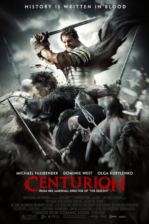

#3301 Centurion
 
 IMDB-Wertung: 6.4 / 10
IMDB-Wertung: 6.4 / 10  Metascore: 62
Metascore: 62 
Im Schottland des Jahres 117 vor Christus führt der Zenturio Quintus Dias eine Gruppe von Soldaten an, die einen römischen General aus den Händen eines Stammes der Pikten befreien soll. Dabei wird der Sohn des Pikten-Führers getötet, die besten Krieger machen daraufhin unter Führung der tödlichen Fährtenleserin Etain Jagd auf die Römer. Bei einem verheerenden Angriff wird die Legion auf sieben Mann, darunter Quintus, dezimiert. Eine brutale Hatz beginnt.
Jahr: 2010
Dauer: 97 Minuten
FSK: 18
Land: England Studio: Constantin FilmTonspuren: DTS - ,
Untertitel:
Auflösung: 1080p (1920x816) Größe: 7731 MB
Genre: Action, Thriller, Drama, Abenteuer, Krieg, Geschichte
Regisseur: Neil Marshall
Drehbuch: Neil Marshall
Soundtrack: Ilan Eshkeri
Darsteller:
 Michael Fassbender als Centurion Quintus Dias
Michael Fassbender als Centurion Quintus Dias Andreas Wisniewski als Commander Gratus
Andreas Wisniewski als Commander Gratus Dave Legeno als Vortix
Dave Legeno als Vortix Dominic West als General Titus Flavius Virilus
Dominic West als General Titus Flavius Virilus Dhaffer L'Abidine als Arm Wrestling Opponent
Dhaffer L'Abidine als Arm Wrestling Opponent JJ Feild als Thax
JJ Feild als Thax Lee Ross als Septus
Lee Ross als Septus David Morrissey als Bothos
David Morrissey als Bothos- Simon Chadwick als Carlisle Messenger
 Ulrich Thomsen als Gorlacon
Ulrich Thomsen als Gorlacon Paul Freeman als Governor Julius Agricola
Paul Freeman als Governor Julius Agricola Olga Kurylenko als Etain
Olga Kurylenko als Etain- Jake Maskall als Roman Officer Argos
- Eoin Macken als Achivir
 Dermot Keaney als Pict Hunter
Dermot Keaney als Pict Hunter Liam Cunningham als Brick
Liam Cunningham als Brick Noel Clarke als Macros
Noel Clarke als Macros- Dimitri Leonidas als Leonidas
 Riz Ahmed als Tarak
Riz Ahmed als Tarak Imogen Poots als Arianne
Imogen Poots als Arianne- Dylan Brown als Roman Guard
 Rachael Stirling als Druzilla
Rachael Stirling als Druzilla Michael Carter als General Antoninus
Michael Carter als General Antoninus Peter Guinness als General Cassius
Peter Guinness als General Cassius- Neil Marshall als Archer on Hadrian's Wall , uncredited
- Daniel Messier als Cassius , uncredited
- Axelle Carolyn als Aeron
- Ryan Atkinson als Gorlacon's Son
- Tom Mannion als General Tesio
- Jerome Boyle als Roman Soldier , uncredited
- Connor Byrne als , uncredited
- James Currie als Maximus , uncredited
- Warren Harrington als Pict Warrior , uncredited
- Hamish Moir als Pictish Warrior , uncredited
- Robert Roman Ratajczak als Villager , uncredited
- Dan Raynham als Warrior , uncredited
 Steve Saunders als Pict Warrior , uncredited
Steve Saunders als Pict Warrior , uncredited- Sebastian Tarlach als Knight , uncredited
- Chuen Tsou als Mercenary , uncredited
Datei: X:\FSK18-2010\Centurion (2010, FSK18, 1920x816).mkv seit 06.03.2016
Festplatte: FSK18
 Es gibt insgesamt 35 Filme in der Gruppe 'FSK18-2010'
Es gibt insgesamt 35 Filme in der Gruppe 'FSK18-2010'